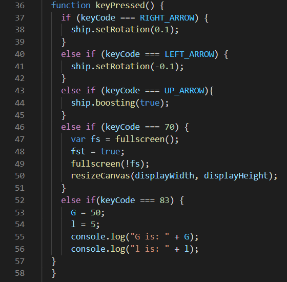
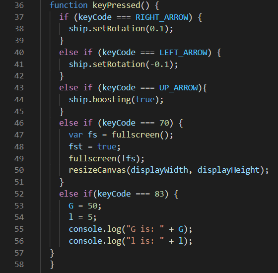

Tyler Nixon's Portfolo

 

I’m going to keep on practicing and training my mind with new pieces of code or work with the same pieces to try and improve on them. I would like to continue practicing because, in programming, we don’t like to repeat code over and over again. The aspect of the module that made the biggest impact are the different types of loops, for example the "for and while". Some other aspects include functions, passing variables through functions, declaring objects and prototypes. The reason I chose these ones particularly is because these are the most important ones to know and they help so much with time saving. They also help with keeping the amount of variables to a minimum.
Here's a link to one of my projects: https://www.khanacademy.org/computer-programming/spin-off-of-project-shooting-star/6511585309179904
I will use the skills to make websites and style them. There are so many different styles; therefore, learning how to create an effect that really works is worth it. You can look up some more CSS styles but you can also go to other people's websites and look at their style code. By doing so, you can get really good ideas and implement them into your code. The aspect of the module that made the biggest impact is the selectors, classes, ID’s to identify the different tags to help style your webpage. The reason I chose these 3 was because they are the most frequently used in HTML and CSS.
Here's a link to one of my projects: https://www.khanacademy.org/computer-programming/spin-off-of-project-event-invite/5725595783086080
I will come up with some easy games and try to program them myself. If I’m having trouble, I will research how to do what part I'm stuck on and learn from that piece of code. After learning, I can incorporate that piece of code into other programs. The aspect of the module that made the biggest impact is the methodical approach to all the games. The reason I chose the methodical approach was because you have to train yourself to think differently when you program games or other programs.
Here's a link to one of my projects: https://www.khanacademy.org/computer-programming/spin-off-of-project-hoppy-beaver-extreme/6426763689672704
I will come up with some real life situations and try to program them. For example, I would like to program leaves falling from a tree or a rocket going up and falling down. This will make me research how to code what I want to code and learn from Daniel Shiffman. The aspect of the module that made the biggest impact is the vectors math, gravity and forces in general. The reason I singled these 3 modules was because they are the most important topics for real life simulation.
Here's a link to a on Kahn academy projects: https://www.khanacademy.org/computing/computer-programming/programming-natural-simulations/programming-forces/pc/challenge-mutual-repulsion
I will take all of these small lessons and try to create a more complex project. A more complex project is any project that has multiple steps and layers of objects and players. The aspect of the module that made the biggest impact are the Output to the Screen, Variables, Math, Strings, Conditionals Statements, Procedures, Loops and Arrays. The reason I chose these ones particularly is because these are the most important ones to know and they help so much with time saving. They also help with keeping the amount of variables to a minimum.
I will have good studying habits and keep on practicing by creating my own projects. I would like to continue to keep my dream alive. The aspect of the module that made the biggest impact are the Connections to the Film slide, How do Personal Expectations affect you, Perspective of this slide and Why is this Topic is Important.
This is a link to a video talking about cubing. In the video I chose the topic of studying https://www.youtube.com/watch?v=1oZY2e25VUw
By doing experiments and courses in the Github lab, I learned many computer science concepts. In the lab, there are still a number of courses but, sadly, I did not have time to complete them. I would like to complete some more to continue learning. The aspect of the module that made the biggest impact are the Communicating Using Markdown, Introduction to HTML and Managing Merge Conflicts. These are the courses to check out. I recommend them. Here is where you can do the courses that I took: https://lab.github.com/
I used different methods to look from a different perspective and that is exactly what cubing is doing in terms of computer science. Cubing looks into Algorithms and how it affects the outcome to the cube. The cube is a puzzle and you can look at it by trying to figure out how to solve it so you would do the same with coding or programming. The aspect of the module that made the biggest impact is the time trials and learning with the algorithms. The reasons that I chose these 2 in particular is because time trials are how fast you can solve the cubs and learning with algorithms are how you get faster at solving.
This link is private: https://github.com/Tyler-cmd/Cubing
I will continue to learn by completing the practice and the projects. There are more projects but I don’t have the time right now to complete them. I am planning to do them over the summer. The aspect of the module that made the biggest impact is the <input> tag because it is something that I have never learned or done before.
This is a link to the p5 sketch : https://editor.p5js.org/Tyler-cmd/sketches/M2oxQYZnA.
This is the project down below:
I will do projects like this while learning and sharing projects so others can view them. I learn better when I do projects or free coding on my own.???? You might like this project for example. The aspect of the module that made the biggest impact is the collaboration with others and the enjoyment of making it.
Bellow I have 3 projects the first one is a copy of the origenal dan shiffemen
code that was created and the second one is my refactered code and the thurd one is my parners refactered code.
The first and secound can be found in my Github page.
My parners can be found HERE
and the walkthrough.
For better game play go to full screen by clicking the canvas and pressing f key.
Place Attractors:
Click to Place Attractors anywhere on the canvas. The first one will start the attraction process.
Speed Particles:
To control the speed of the particles you press [a], [s], and [d] on your keyboard. [a] will accelerate the particles, [s] will keep them the same and [d] will deaccelerate the particles. ONLY the particles will be effected by this!
Ship Controls:
You move the ship with the [↑], [←], and [→] arrow keys on the keyboard. The Left[←] and Right[→] arrow keys controls the turning left or right. The Up[↑] arrow key contols the boost or to push the ship and get it moving.
Reload page to see full effect